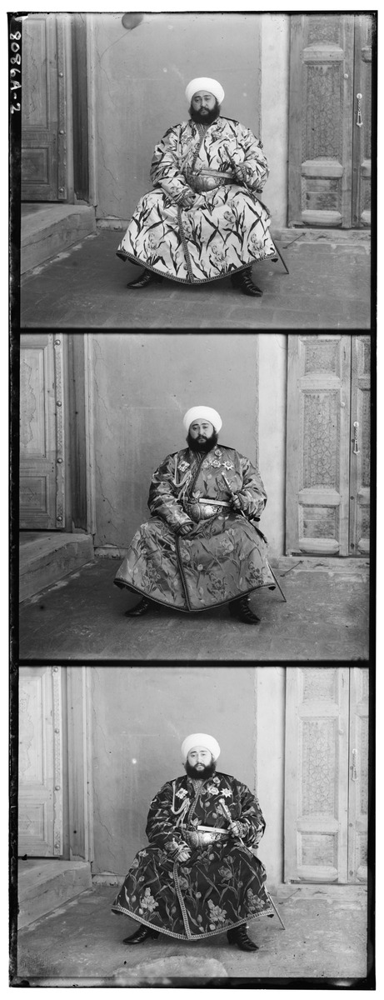
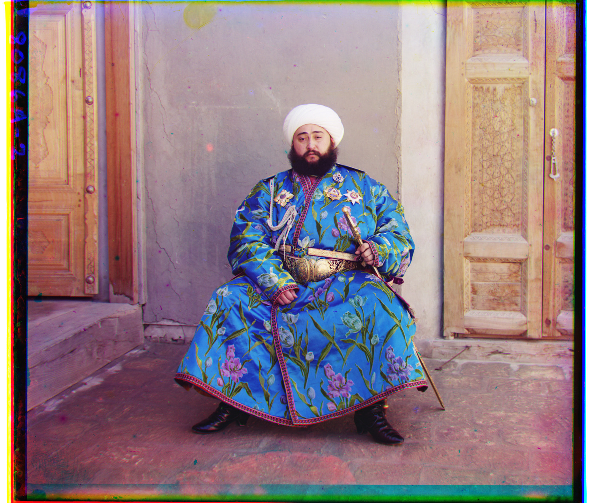
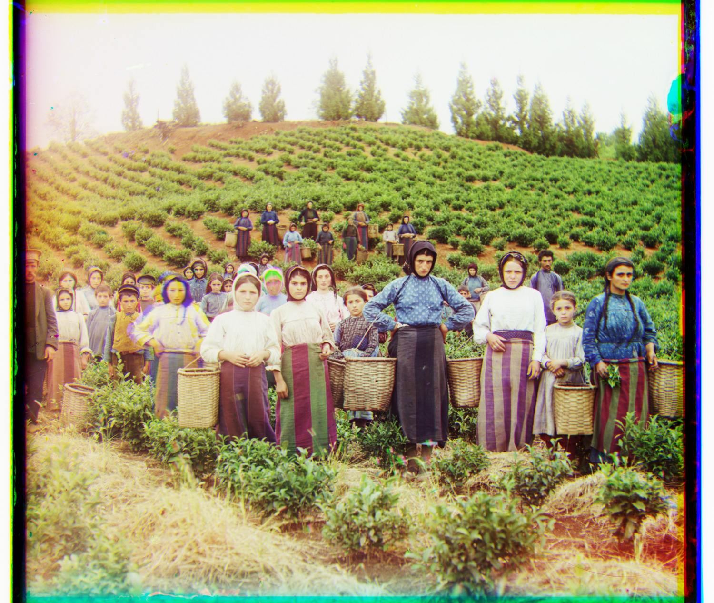
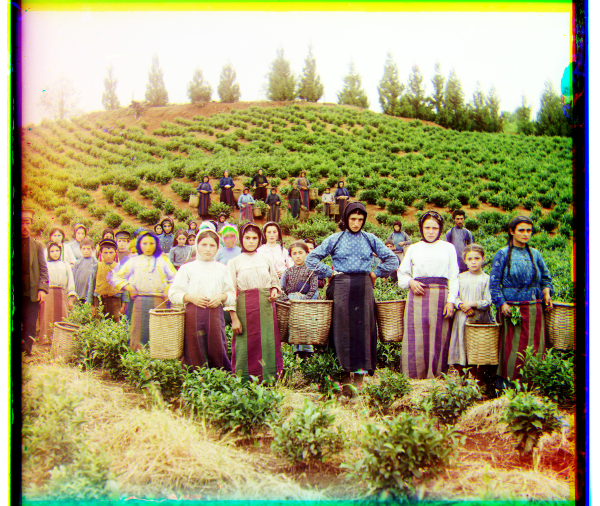

Cathedral


CS180 · Fall 2026 · Project 1
Reconstructing the Prokudin-Gorskii photographs by aligning their blue, green, and red channels.


Prokudin-Gorskii photographed each scene through three color filters. The supplied scans place those exposures vertically, in blue, green, red order. If we separate the scan into thirds and stack the channels directly, the edges of objects appear several times in different colors because the exposures do not occupy exactly the same position.
I use the blue channel as the reference and find an integer translation for green and red. The color image is then assembled in RGB order. All offsets in this report are (x, y): positive x moves right, and positive y moves down. The offsets describe the shift applied to the moving channel, relative to blue.
The implementation follows the provided Python starter. It converts the scan to floating point on [0, 1], takes three equal slices, aligns green and red, and saves an RGB image. Up to two leftover rows at the bottom of a scan are discarded. The same parameters are used for every image.
01 / Single-scale alignment
For the JPEG inputs, I test every horizontal and vertical shift from -15 to 15. That gives 961 candidate translations per channel. At each candidate, I compare an interior rectangle of the reference channel with the corresponding shifted rectangle of the moving channel. The outer 15% is excluded from scoring because the dark and bright scan borders can dominate the comparison.
L2 measures the distance between pixel intensities. I minimize the mean squared difference, which gives the same winning shift as minimizing the L2 norm because every candidate has the same number of pixels. NCC subtracts the mean from each patch and normalizes its length before measuring similarity:
NCC is less sensitive to an overall change in brightness or contrast between channels. It still assumes that the pattern of bright and dark regions is similar. That assumption becomes a problem when a strongly colored object has very different intensities through different filters.
The search uses nested loops over translations and NumPy array operations over pixels. Every candidate uses the same reference rectangle, with enough margin to prevent wrapped pixels from contributing to the score. NCC and L2 selected the same offsets on all three JPEGs.


02 / Multi-scale alignment
A shift of 100 pixels is outside the JPEG search window. Expanding that window directly on a large TIFF would require scoring many more translations, each over millions of pixels. The pyramid makes those large shifts small enough to search at a reduced resolution.
[1, 4, 6, 4, 1] / 16, then keep every second pixel in each direction. Repeat until the longest side is at most 200 pixels.[-15, 15] in both directions.±2 pixels of that estimate, and repeat through the original resolution.The blur reduces aliasing before downsampling. I build the levels and propagate the shifts explicitly; no automatic alignment or pyramid-building routine is used. The baseline computes NCC on the channel intensities at every level. The finest level uses the original full-resolution channel values.
The table below follows the green and red estimates for Melons. The intermediate offsets are in pixels of that level, so their numerical size grows as the image resolution increases.
| Scale | Channel size (w × h) | Search radius | Green (x, y) | Red (x, y) |
|---|---|---|---|---|
| 1/32 | 118 × 102 | ±15 | (0, 3) | (1, 6) |
| 1/16 | 236 × 203 | ±2 | (1, 5) | (1, 11) |
| 1/8 | 472 × 406 | ±2 | (1, 10) | (2, 22) |
| 1/4 | 943 × 811 | ±2 | (3, 21) | (3, 45) |
| 1/2 | 1885 × 1621 | ±2 | (5, 41) | (7, 89) |
| 1/1 | 3770 × 3241 | ±2 | (10, 81) | (14, 178) |


After estimating the translations, I shift the original channels with np.roll and keep only their common valid area. This removes pixels that wrapped around the array. The original photographed frame can still be visible; this crop uses the translations and does not try to detect the scene boundary.
03 / All supplied images
These are the required pyramid results using NCC on raw channel intensities. Each TIFF was processed at its original resolution. Browser images are reduced to at most 1,500 pixels on the longest side; the local output folder contains the full-resolution JPGs.
The gallery initially shows the raw-pixel baseline. The second view shows the edge-based extension described below. Both sets of offsets are available in the CSV table.
Raw-pixel NCC · offsets in (x, y)

G (2, 5) R (3, 12)

G (4, 25) R (-4, 58)

G (24, 49) R (-482, 400)

G (17, 60) R (14, 124)
G (17, 41) R (23, 89)

G (7, 40) R (11, 130)
G (10, 81) R (14, 178)

G (2, -3) R (2, 3)

G (3, 28) R (7, 68)

G (29, 79) R (37, 176)

G (-6, 49) R (-25, 96)

G (14, 52) R (11, 111)

G (3, 3) R (3, 6)

G (-7, 15) R (-16, 82)
| Image | Green | Red | Levels | Alignment (s) |
|---|---|---|---|---|
| Cathedral | (2, 5) | (3, 12) | 2 | 0.06 |
| Church | (4, 25) | (-4, 58) | 6 | 0.77 |
| Emir | (24, 49) | (-482, 400) | 6 | 0.79 |
| Harvesters | (17, 60) | (14, 124) | 6 | 0.78 |
| Icon | (17, 41) | (23, 89) | 6 | 0.84 |
| Ilemselga | (7, 40) | (11, 130) | 6 | 0.81 |
| Melons | (10, 81) | (14, 178) | 6 | 0.81 |
| Monastery | (2, -3) | (2, 3) | 2 | 0.06 |
| Religious painting | (3, 28) | (7, 68) | 6 | 0.80 |
| Self portrait | (29, 79) | (37, 176) | 6 | 0.82 |
| Siren | (-6, 49) | (-25, 96) | 6 | 0.84 |
| Three generations | (14, 52) | (11, 111) | 6 | 0.77 |
| Tobolsk | (3, 3) | (3, 6) | 2 | 0.06 |
| Wharf | (-7, 15) | (-16, 82) | 6 | 0.82 |
04 / Additional examples
I downloaded the original three-frame TIFF negatives from the Library of Congress and ran the same raw-pixel NCC pyramid on all three. Each source record and original file is linked below.
Yusuf Hamadani mosque and mausoleum, ancient Merv, Turkmenistan · Original glass-plate TIFF

G (5, 32) R (8, 79)
The wall and the edges of the domes give the search long, continuous features. The sky changes in brightness across the exposures, but the structures still line up with raw-pixel NCC.
Suna River at the village of Maloe Voronovo · Original glass-plate TIFF

G (-5, 25) R (-11, 102)
The rooflines and riverbank provide detail across the frame. Water and sky have fewer features, so the buildings are more useful for judging whether the reconstruction is aligned.
Locomotive and coal car at a railroad yard · Original glass-plate TIFF

G (31, 38) R (-165, 294)
This scan has a much larger vertical red-channel displacement than the other two examples. The train and buildings align, although small colored fringes remain along some rails and fine edges. A single translation cannot remove all local differences between the exposures.
| Image | Green | Red | Levels | Alignment (s) |
|---|---|---|---|---|
| Yusuf Hamadani mosque | (5, 32) | (8, 79) | 6 | 0.80 |
| Suna River | (-5, 25) | (-11, 102) | 6 | 0.83 |
| Locomotive | (31, 38) | (-165, 294) | 6 | 0.83 |
05 / Bells and whistles
The Emir's robe is a difficult case for raw-pixel matching. A blue fabric can be bright through the blue filter and dark through the red filter. NCC removes one mean and scale from the whole patch, but it cannot make every differently colored object respond the same way.
An incorrect match at the coarsest level also carries through the pyramid: the small refinement window at later levels cannot recover from a large initial error. For the extension, I compute Sobel horizontal and vertical derivatives and use their gradient magnitude as the feature image. I then apply the same NCC search and the same pyramid parameters. Strong boundaries are useful even when the regions on either side have different brightness in each exposure. The feature images are used only to estimate the offsets; the final RGB values still come from the original channels.
| Features | Green (x, y) | Red (x, y) |
|---|---|---|
| Raw intensities | (24, 49) | (-482, 400) |
| Gradient magnitude | (24, 49) | (40, 107) |
I also apply a shared linear intensity stretch. The 1st and 99th percentiles are estimated across all RGB values in the interior, excluding the outer 10% so the scanned frame has less influence. Those two values are mapped to 0 and 1, and values outside the range are clipped. Using one mapping for all channels avoids independently rescaling the colors.
The comparison below keeps the edge-based alignment fixed. This adjustment can make detail easier to see, but it can also clip highlights and shadows. It does not estimate white balance or recover the original colors of the scene.


06 / Discussion
The main failure of the raw-intensity baseline is Emir, where the red-channel estimate is affected by the different brightness of the clothing across filters. Edge features improve that match. The required raw-pixel result remains visible above so that the effect of the feature change can be compared directly.
Some small artifacts remain even when the scene is aligned. People, water, and foliage can move between exposures. Scratches and dust occur in different places on the glass, and a single translation cannot correct local distortion or rotation. Colored margins around the original scan also remain because only wrapped pixels are removed. I have kept those limits visible instead of retouching individual results.
Across all 17 raw-pixel pyramid runs, the measured alignment time was 0.06 to 0.84 seconds per image, with a median of 0.80 seconds. These times include pyramid construction and the searches for both channels. Reading the scan and saving the full-resolution and browser JPGs brought the total to 0.07 to 1.36 seconds. Timings come from a single run per image on this machine, so they should be treated as measurements of this run.
The code includes checks for known translations, brightness changes, odd image dimensions, and removal of wrapped pixels. It also saves each level's offsets and score, so the estimates can be traced back through the pyramid. No offsets are entered by hand.
Photographs: Prokudin-Gorskii photograph collection, Library of Congress, Prints and Photographs Division. The 14 supplied scans come from the course dataset. The additional scans are cited with their reconstructions.
The starting point was the course Python skeleton. NumPy handles the array operations, SciPy applies the separable filter kernels, and scikit-image and Pillow handle image conversion and file output. The search and pyramid logic are implemented in the submitted code.
The online gallery has a raw-pixel/edge-feature toggle, and image links open larger views. This PDF shows the raw-pixel gallery and the explicit before-and-after examples.